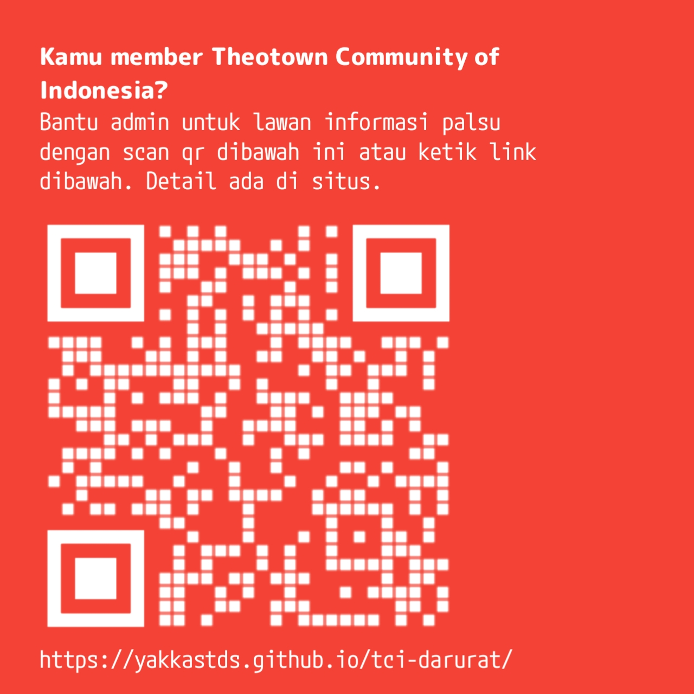

Grup Facebook TheoTown Community Indonesia (TCI) telah diambil alih oleh pihak yang tidak bertanggung jawab. Tim admin sedang melakukan berbagai upaya pemulihan melalui jalur resmi dan situs ini digunakan sebagai pusat informasi darurat sementara.
Untuk memperoleh informasi terbaru dan menghindari misinformasi, silakan ikuti kanal resmi berikut:
Sampai saat ini tim admin masih berupaya memulihkan grup melalui jalur resmi. Mohon berhati-hati terhadap informasi yang tidak berasal dari kanal resmi TCI.
Kami mengimbau seluruh anggota untuk tidak menyebarkan informasi yang belum dapat diverifikasi kebenarannya.

Dokumentasi lengkap, screenshot, dan pembaruan terbaru dapat dilihat melalui postingan resmi admin TCI pada kanal resmi yang telah disebutkan di atas.
Salah satu dokumentasi video terkait kejadian ini dapat dilihat melalui video berikut: